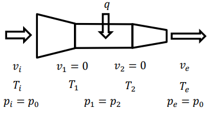

Задача 1. Хелмхолцови бобини.
а) По кръгов проводник с радиус $R$ тече ток с големина $I$. Получете формула за големината на индукцията $B_1 (z)$ на магнитното поле в точка, лежаща на оста на симетрия на окръжността, намираща се на разстояние $z$ от равнината, в която лежи проводникът. [2 т.]
б) Нека на разстояние $L$ от първия кръгов проводник се намира втори кръгов проводник, идентичен на първия (т.е. със същия радиус $R$ и по който тече ток $I$ със същата големина и посока). Осите на симетрия на двата проводника съвпадат и проводниците лежат в успоредни равнини (разстоянието между тях е $L$). Намерете при каква стойност на отношението $\displaystyle k = \frac{L}{R}$, магнитното поле $B_2 (z)$ по оста $z$ в околност на средата между двата проводника ще бъде “най-еднородно”. Началото на оста $z$ се избира в центъра на единия от двата проводника. Тогава центърът на другия проводник ще има координата $z = L$, а средата между тях: $z = L/2$. [4 т.]
в) За така изчислената стойност на $k$, получете формула за големината на индукцията $B_2 (\frac{L}{2})$ на магнитното поле в средата между двата проводника. \[0.5 т.]
г) За да оцените доколко е еднородно магнитното поле по оста $z$ между двата проводника, изчислете отношенията на индукцията в различни двойки точки: $\displaystyle b_1 = \frac{B_2 (0)}{B_2 (L/2)}$ и $\displaystyle b_2 = \frac{B_2 (L/4)}{B_2(L/2)}$. Представете отношенията $b_1$ и $b_2$ като десетични дроби с точност 4 знака след десетичната запетая. [1 т.]
д) Съвкупността от двата кръгови проводника, разгледана в подусловие б) се нарича Хелмхолцови бобини. За да се създава по-силно магнитно поле, обаче всеки от тези два кръгови проводника е заменен с $N$ много близки проводника, образуващи соленоид (именно те образуват бобината). Приемете, че дължината на всяка от бобините е пренебрежимо малка (много по-малка от $L$). Тези Хелмхолцови бобини са с радиус $R = 20,0 \mathrm{~cm}$ и са част от експериментална установка за измерване на специфичния заряд на електрона (отношението $e/me$). За целта вакуумиран стъклен балон е поместен в средата между двата проводника (Хелмхолцовите бобини, там където магнитното поле е най-еднородно). Електрони, получени чрез термоелектронна емисия от нагрят катод във вакуумирания стъклен балон, с пренебрежима начална скорост, се ускоряват от електрично поле (между катода и анод) чрез напрежение $U = 200,0 \mathrm{~V}$. След това се движат само под действие на магнитното поле във вакуумираната част на тръбата. В тръбата обаче има малко количество остатъчни газове, така че малка част от движещите се електрони взаимодействат с молекулите на остатъчните газове, възбуждат ги, след което при тяхната релаксация се наблюдава светене. Така траекторията на електроните може да се наблюдава с просто око, защото “свети”. Установено е, че при ток през бобините $I = 1,378 \mathrm{~A}$, траекторията на електроните е окръжност с радиус точно $r =5,00 \mathrm{~cm}$. Изчислете броя $N$ на намотките във всяка от Хелмхолцовите бобини. \[2.5 т.]
Задача 2. Ефект на Майснер.
а) По безкраен прав проводник тече ток с големина $I$. Използвайки закона на Био-Савар, докажете, че големината на индукцията на магнитното поле на разстояние $r$ от проводника е $\displaystyle B = \frac{\mu_0I}{2\pi r}$. [2 т.]
б) Нека проводникът се намира на разстояние $d$ от плоската повърхност на безкраен свръхпроводник (който заема половината пространство). Интересно свойство на свръхпроводниците е, че освен че тяхното електрично съпротивление е нула, в тях няма магнитно поле. Последното се нарича ефект на Майснер. Този факт води до поява на сила на отблъскване между източници на магнитно поле и свръхпроводници. Използвайки метод, подобен на метода на огледалните изображения в електростатиката, и факта, че магнитните силови линии са винаги затворени криви, получете формула за силата на отблъскване, действаща на проводника на единица дължина от него, от страна на свръхпроводника. [3 т.]
в) Нека повърхността на свръхпроводника е хоризонтална. Земното ускорение е $g$. Масата на единица дължина от проводника е $\displaystyle \frac{\Delta m}{\Delta l} = k$. Намерете разстоянието $d_0$ (това е разстоянието от проводника до повърхността на свръхпроводника), на което проводникът ще се намира в равновесие. [2 т.]
г) Нека проводникът извършва вертикални трептения с малка амплитуда около положението си на равновесие. Изчислете периода $T$ на тези трептения. Изразете периода $T$ чрез $d_0$ и $g$. [3 т.]
Задача 3. Турбореактивен двигател.
Tурбореактивният двигател е двигател, основно използван като самолетен двигател, чиято основна съставна част е газова турбина, и чието действие се основава на изгарянето на смес от подаван под налягане въздух и гориво. Получената при изгарянето топлина нагрява газовата смес и разширявайки се, тя излиза от двигателя с голяма скорост, като създава реактивна тяга.
а) Нека разгледаме прост модел на турбореактивен двигател. Самолетът се движи равномерно спрямо въздуха със скорост $v_i$, т.е. въздухът влиза в двигателя със скорост $v_i$, а излиза от него със скорост $v_e$ (спрямо двигателя). Плътността на влизащия въздух е $\rho$, а сечението на отвора на двигателя - $S$. Получете формула за реактивната сила $F_r$, действаща на двигателя. [1 т.]
б) Нека в двигателя при изгарянето на горивото се отделя количество топлина за единица време $\displaystyle q = \frac{\Delta Q}{\Delta t}$. Получете формула за коефициента на полезно действие $\eta$ на двигателя. [1 т.]
в) Процесите в най-простия модел на такъв двигател (без турбина) се моделират с кръговия процес (цикъла) на Brayton. Той е съставен от две изобари и две адиабати. Изчислете коефициента на полезно действие $\eta_B$ на такъв цикъл за идеален газ с коефициент на адиабатата $\gamma$ ($\displaystyle \gamma = \frac{c_p}{c_V}$). Двата изобарни процеса се извършват съответно при налягания $p_1$ и $p_2$ ($p_2 > p_1$). Уравнението на състоянието на идеалния газ при адиабатния процес е $p.V^\gamma = const$. [2 т.]
\begin{wrapfigure}{l}{0.4\textwidth}  %\caption{} \end{wrapfigure} г) Нека разгледаме по-конкретен модел на реактивен двигател (без турбина). Влизащият в двигателя въздух има скорост $v_i$, температура $T_i$ и налягане $p_i = p_0$ (виж фигурата). При навлизането в двигателя газът адиабатно си увеличава температурата до $T_1$, налягането до $p_1$, а скоростта му става нула. След това изгарящото гориво (масата му се пренебрегва, променящият се химически състав на въздуха също не се отчита) отделя количество топлина за единица време $q = \Delta Q/ \Delta t$. При този процес газът се нагрява изобарно до температура $T_2$ и налягане $p_2 = p_1$, като скоростта му все още е нула. След това газът се разширява адиабатно до температура $T_e$, налягане $p_e = p_0$ и започва да се движи спрямо двигателя със скорост $v_e$. Докажете, че $\displaystyle T_1 - T_i = \frac{v_i^2}{2c_p}$, където $c_p$ е специфичният топлинен капацитет при постоянно налягане (т.е. $\displaystyle c_p = \frac{\Delta Q}{\Delta m \Delta T}$, при $p = const$.) \[0.5 т.] Получете формула за скоростта $v_e = v_e(v_i,\rho,S,q,c_p,T_i)$ на изтичане на въздуха от двигателя. [3 т.]
д) Оказва се, че моделът на реактивния двигател без турбина, описан в подусловие г), има много нисък КПД. Затова ще разгледаме усложнен модел, по който работят турбореактивните двигатели (с турбина, виж схемата и фигурата).
\begin{figure}[H] \includegraphics[width=0.75\textwidth, center]{2021pr_2.png} %\caption{} \end{figure} \begin{figure}[H] \includegraphics[width=0.98\textwidth, center]{2021pr_3.png} %\caption{} \end{figure}
Влизащият в двигателя въздух има скорост $v_i$, температура $T_i$ и налягане $p_i = p_0$ (виж фигурата). При навлизането в двигателя газът адиабатно си увеличава температурата до $T_1$, налягането до $p_1$, а скоростта му става нула. След това лявата част на турбината компресира въздуха адиабатно до състояние с температура $T_3$, налягане $p_3$, а скоростта му продължава да е нула. Отношението (степента на компресия) $\displaystyle \frac{p_3}{p_1} = b$ . При това турбината извършва работа $A$ (неизвестна) за единица време върху газа. След това изгарящото гориво (масата му се пренебрегва, променящият се химически състав на въздуха също не се отчита) отделя количество топлина за единица време $\displaystyle q = \frac{\Delta Q }{\Delta t}$. При този процес газът се нагрява изобарно до температура $T_4$ и налягане $p_4 = p_3$, като скоростта му все още е нула. След това газът извършва същото количество работа $A$ за единица време върху дясната част на турбината, при което адиабатно достига до температура $T_2$, налягане $p_2$, а скоростта му продължава да е нула. След това газът се разширява адиабатно до температура $T_e$, налягане $p_e = p_0$ и започва да се движи спрямо двигателя със скорост $v_e$. Получете формула за скоростта $v_e = v_e (v_i, \rho, S, q, c_p, T_i, b)$ на изтичане на въздуха от двигателя. \[2.5 т.]
Полезна физика и математика:
Закон на Био-Савар: Индукцията $\Delta B$ на магнитното поле, създадено от проводник с дължина $\Delta l$, по който тече ток $I$, в точка на разстояние $r$ от него, е $\displaystyle\Delta B = \frac{\mu_0}{4\pi}\frac{I\Delta l \sin \theta}{r^2}$, където ъгълът $\theta$ е ъгълът между проводника и правата, свързваща проводника с точката. Посоката ѝ се определя от правилото на дясната ръка. Във векторна диференциална форма $\displaystyle d\vec{B} =\frac{\mu_0}{4\pi}\frac{I d \vec{l} \times \vec{r}}{r^3}$, ($\displaystyle \vec{e_r} = \frac{\vec{r}}{r}$).
Заряд на електрона $e = 1,602.10^{-19} \mathrm{~C}$
Маса на електрона $m_e = 9,110.10^{-31} \mathrm{~kg}$
Магнитна проницаемост на вакуума $\mu_0 = 4\pi.10^{-7} \mathrm{~H/m}$
Уравнение на състоянието за идеален газ с константа на адиабатата $\gamma$ , извършващ адиабатен процес: $p. V^\gamma = const$.